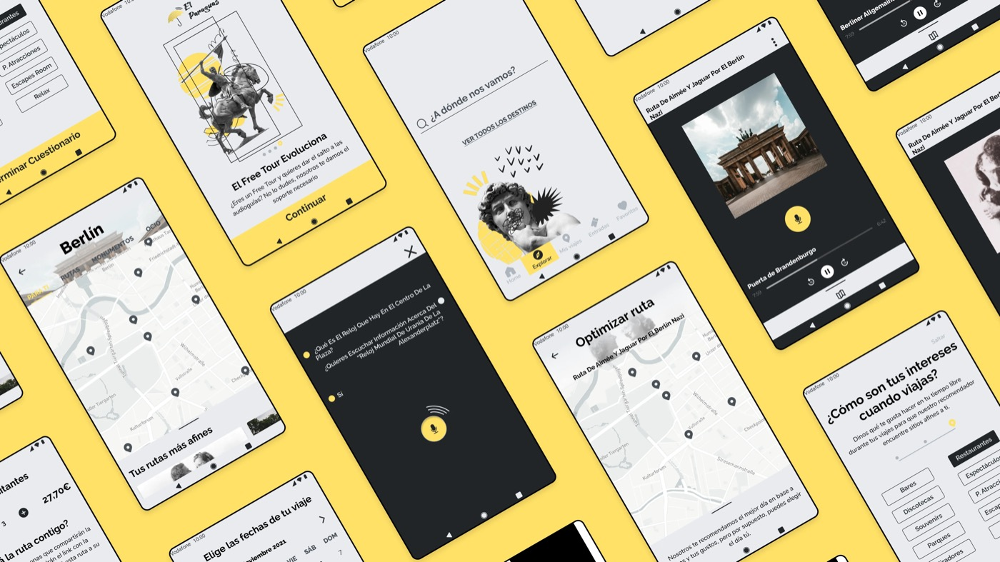
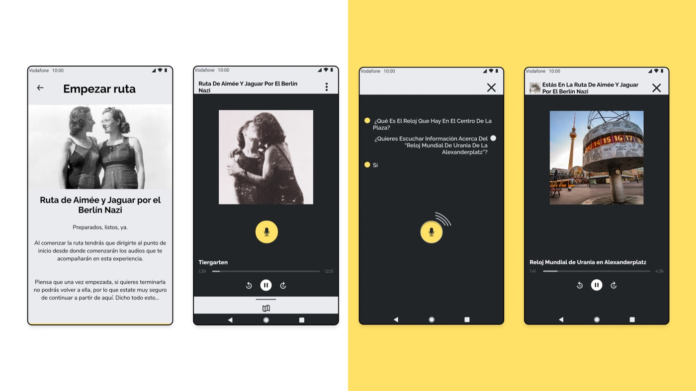
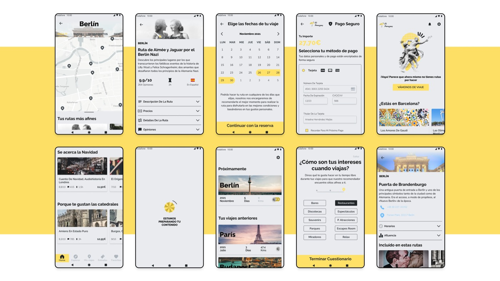

↳ Contexto
El panorama de los viajes se transformó por la pandemia de COVID-19, subrayando la importancia de evitar aglomeraciones y temporadas altas en los destinos. Este cambio puso en valor actividades turísticas flexibles como los "free tours". Sin embargo, la vulnerabilidad económica de los "free tours" se hizo evidente, al depender de las propinas de los turistas al final del recorrido. Las plataformas de reserva imponen costes y comisiones que afectan a los guías, generando problemas económicos cuando las propinas no llegan. El reto: desarrollar una aplicación adaptable a distintas circunstancias, capaz de equilibrar estas realidades cambiantes.
↳ Ejecución
Me sumergí en un reto complejo que exigía una investigación minuciosa y una comprensión profunda de situaciones muy distintas. Aplicando Design Thinking con precisión, elaboré flujos como el canvas N&N, personas de usuario y JTBD, que abordaron con eficacia los distintos retos. El resultado: una app que combina geolocalización e interfaz de voz (VUI), con guías que cobran por adelantado. El diseño de interacción está pensado para garantizar una visita sin distracciones.


↳ Resultado
Una app que resuelve con soltura los vaivenes del sector turístico, encontrando el punto justo entre seguridad, flexibilidad y sostenibilidad económica para los guías. Gracias a la combinación de geolocalización y una interfaz de voz (VUI) bien diseñada, los usuarios disfrutan de una experiencia fluida y mejorada. Esta solución cambia las reglas del juego, respondiendo de forma innovadora al panorama cambiante de los viajes y sentando las bases para futuras apps de turismo.
